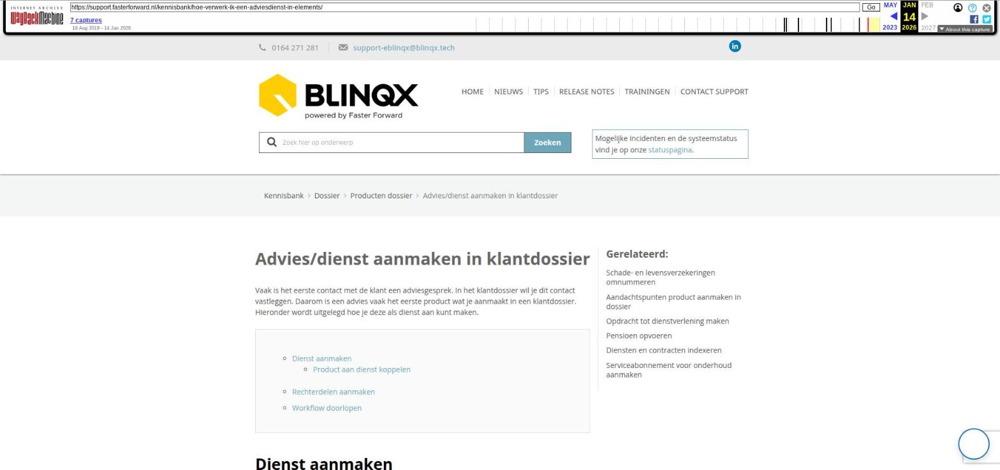

Advies/dienst aanmaken in klantdossier

Tekstinhoud
Advies/dienst aanmaken in klantdossier
Vaak is het eerste contact met de klant een adviesgesprek. In het klantdossier wil je dit contact vastleggen. Daarom is een advies vaak het eerste product wat je aanmaakt in een klantdossier. Hieronder wordt uitgelegd hoe je deze als dienst aan kunt maken.
Dienst aanmaken
Product aan dienst koppelen
Rechterdelen aanmaken
Workflow doorlopen
Dienst aanmaken
Ga naar de startpagina van het desbetreffende klantdossier en klik op de groene knop 'Nieuw product' om een product aan te maken.
Selecteer in het volgende scherm 'Dienst'.
Vervolgens wordt er een productkaart aangemaakt. Deze kan je zo volledig mogelijk invullen en vervolgens opslaan.
Let op: er zijn verplichte velden!
Product aan dienst koppelen
Let op: alleen beschikbaar in eBlinqx, niet in Elements
Het is mogelijk om een product te koppelen aan de dienst. Op deze manier maak je het inzichtelijk welk product precies bij de dienst hoort. Indien gewenst kan je workflows hierop laten reageren. Het koppelen is alleen mogelijk vanuit de dienst en geldt voor niet gearchiveerde producten. Het is niet mogelijk om twee diensten aan elkaar te koppelen. In het gekoppelde product zie je terug of deze wel of niet is gekoppeld aan de dienst.
In de rapportage CRM – Pijplijn met gekoppelde dienst kan je informatie vinden over deze dienst en het gekoppelde product.
Rechterdelen aanmaken
Daarna kan je de delen van het product toevoegen door aan de rechterkant van de productkaart op '+' te klikken voor 'Delen'.
Het volgende scherm verschijnt:
Ook hier dient alles zo volledig mogelijk ingevuld te zijn.
Workflow doorlopen
Nadat je de gegevens hebt aangevuld en opgeslagen, kan je de workflow van de dienst doorlopen door op de pijl te klikken achter het veld status.
Laatste update: 15 oktober 2025
Was deze informatie nuttig?
Ja Nee